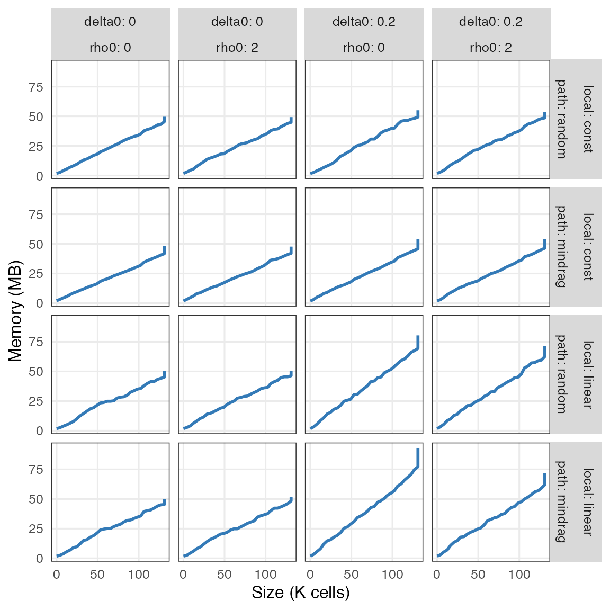
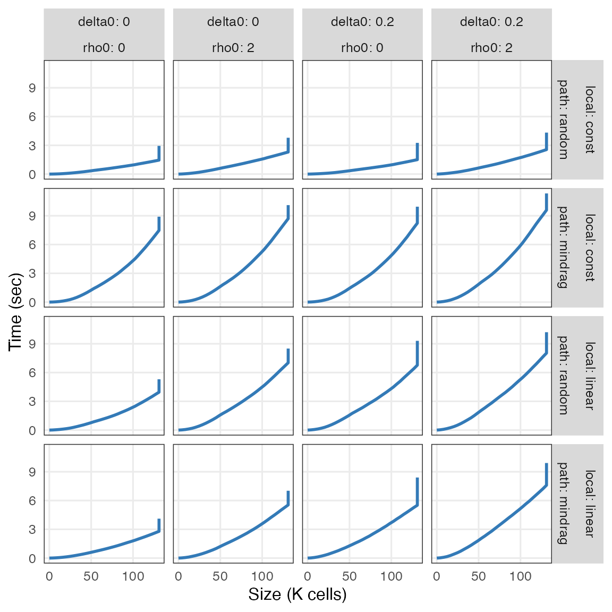

library(tidyverse) library(tumopp) .const = list(D = 3, C = "hex", k = 10, N = 2 ** 17, benchmark = TRUE) .alt = list( L = c("const", "linear"), P = c("random", "mindrag"), d = c(0, 0.2), m = c(0, 2) ) args_tbl = make_args(alt = .alt, const = .const) %>% print() results = tumopp:::system_tumopp(args_tbl) %>% print() unnested = results %>% dplyr::select(-population, -seed) %>% dplyr::mutate(outdir = fs::path_file(outdir)) %>% dplyr::select(where(~ dplyr::n_distinct(.x) > 1L)) %>% tidyr::unnest(benchmark) %>% print() df_benchmark = unnested %>% dplyr::distinct(outdir, size, .keep_all = TRUE) %>% dplyr::mutate( local = factor(local, levels = .alt[["L"]]), path = factor(path, levels = .alt[["P"]]), size = size / 1000, # to K memory = maxrss / 1024, # K to M utime = utime / 1000, # ms to sec stime = stime / 1000, # ms to sec maxrss = NULL ) %>% print() # usethis::use_data(df_benchmark, internal = TRUE, overwrite = TRUE)
-Llinear).ggplot(tumopp:::df_benchmark, aes(size, memory)) + geom_line(size = 1, color = "#337ab7") + facet_grid(local + path ~ delta0 + rho0, label = label_both) + labs(x = "Size (K cells)", y = "Memory (MB)")

-Pmindrag) to search for nearest empty sites from dividing cells,-Lconst) to push out other cells,-Llinear) to skip event queues of dormant (surrounded) cells.-Lconst -Pmindrag is slower than the others because it involves both search and push from interior cells.-L) and placement of daughter cells(-P).ggplot(tumopp:::df_benchmark, aes(size, utime + stime)) + geom_line(size = 1, color = "#337ab7") + facet_grid(local + path ~ delta0 + rho0, label = label_both) + labs(x = "Size (K cells)", y = "Time (sec)")
